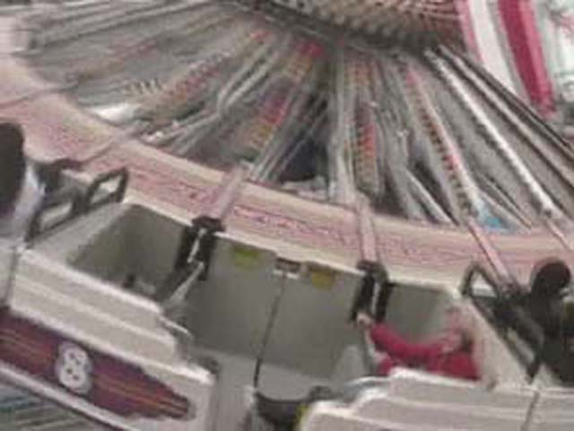
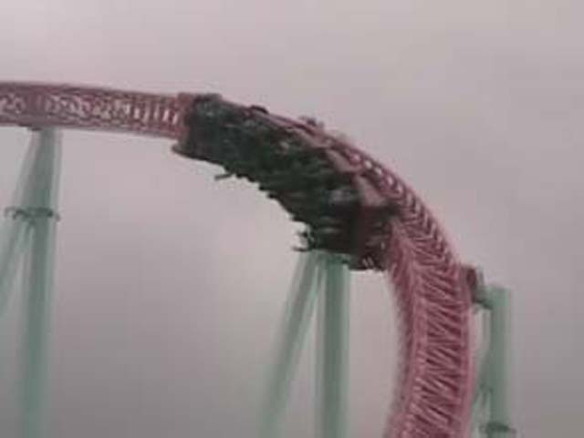
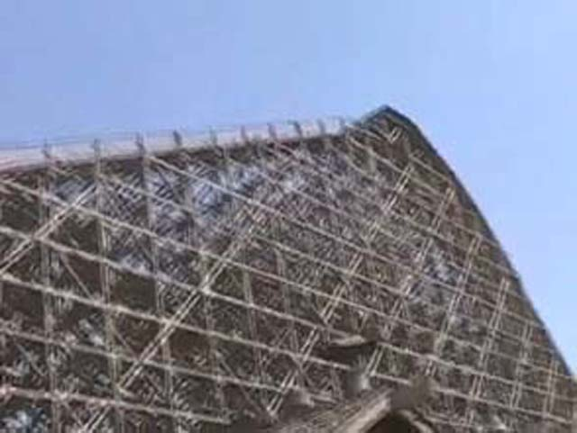
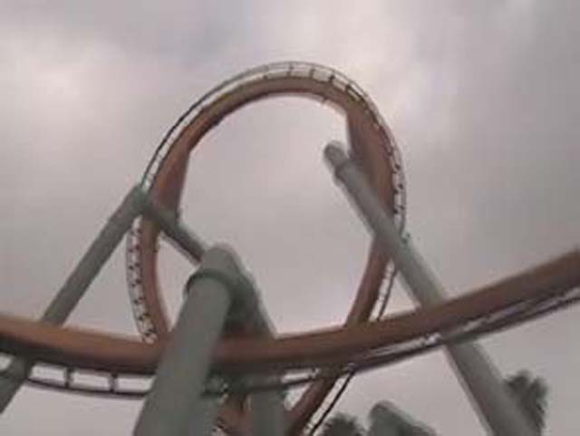
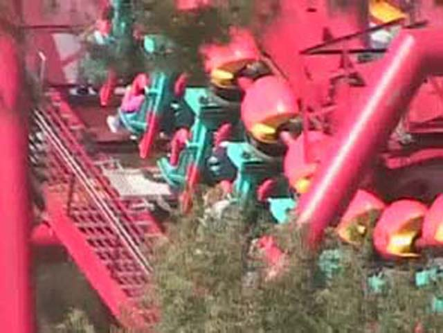

DC/Williamsberg/Knotts
PhiladelphiaDCWilliamsbergKnotts Berry Farm
 We're back on the West coast, and heres a tip, DON'T go to Knotts the day before Easter! Anyways, Heres a picture of Celeste on Wilderness Scrambler.
We're back on the West coast, and heres a tip, DON'T go to Knotts the day before Easter! Anyways, Heres a picture of Celeste on Wilderness Scrambler.
 Yay! Boomerang was a walk on!
Yay! Boomerang was a walk on!
 So much Headbanging Vekoma Goodness!
So much Headbanging Vekoma Goodness!

Celeste absolutely LOVES Wipeout!
I want to ride this all day!
 Luckily, Xcelerator has a 5 min line!
Luckily, Xcelerator has a 5 min line!

Backseat of Xcelerator RULES!
OH MY GOD! What the hell! They said Riptide would be closed today!?! Oh well.
Now that Riptides open, you can see all the people that want to ride this nutcrusher!
Supreme Scream, It's big, fun, but not very intense.
Waveswinger has improved in construction since Fall 2005 Photos.

I had to wait an hour for Ghostrider! But the line was 2 hours when I got off, So I guess I was lucky. Ghostrider is fun.
 I can't belive Silver Bullet had a shorter line than Timberline Twister!
I can't belive Silver Bullet had a shorter line than Timberline Twister!

Not all new B&Ms are forceless. Tatsu is more forceful than any other B&M I've ridden!

These riders on Silver Bullet were never heard from again.
 Schwarzkof Shuttle Loops are cool!
Schwarzkof Shuttle Loops are cool!
 Montezooma is still a great ride!
Montezooma is still a great ride!
 The update is finally over! DC was cool, The homes are nicer in the East coast and don't go to Knotts the day before easter!
The update is finally over! DC was cool, The homes are nicer in the East coast and don't go to Knotts the day before easter!
Home